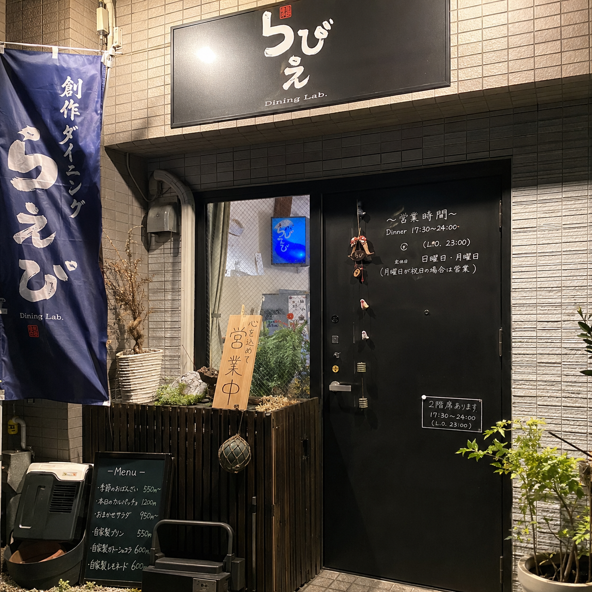
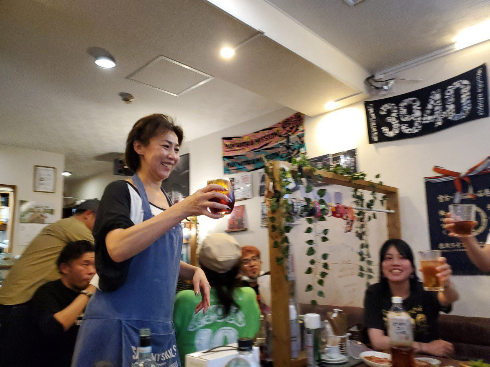
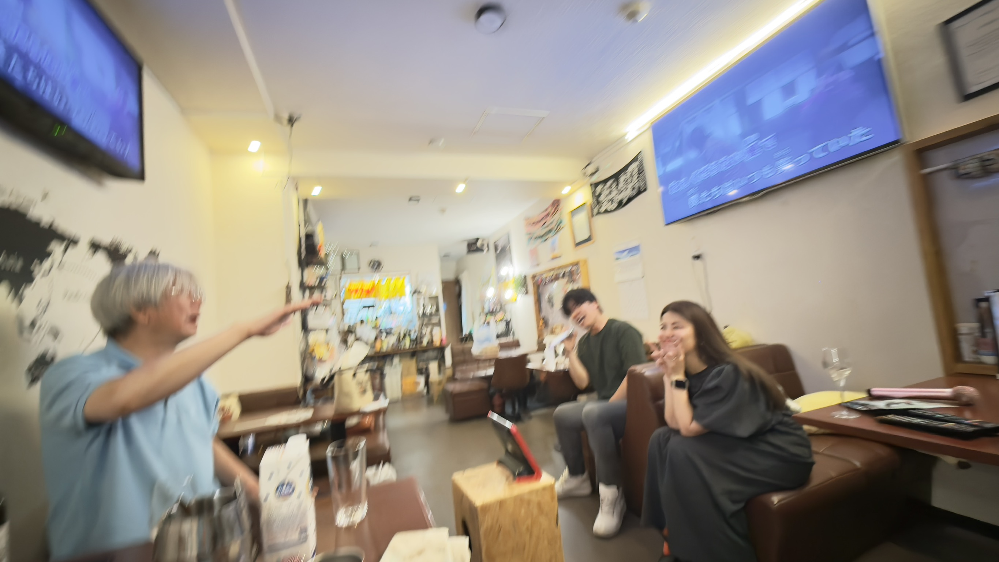

初めての方
ご予約なしで、ふらっと立ち寄ってもOK。おひとりでの来店も大歓迎です。混雑時はお待ちいただくこともあるので、お電話でのご予約がおすすめ。気づけばつい長居してしまう、そんなお店です。
「ただいま」って
言いたくなるお店。
カラオケ酒場らぴえ

ご予約なしで、ふらっと立ち寄ってもOK。おひとりでの来店も大歓迎です。混雑時はお待ちいただくこともあるので、お電話でのご予約がおすすめ。気づけばつい長居してしまう、そんなお店です。

ごはんだけ食べたい日も、カラオケを思いっきり楽しみたい日も、ゆっくり飲むだけの日も。ご自宅で過ごすように、思い思いのひとときを。

常連さんの楽しそうな歌声と、大阪出身のママの笑い声。お客さん同士の会話も自然とはずむ、あたたかな空間です。気づけば隣の席の方と笑い合っている--なんだかホッとできる場所です。
月・火・木・金・土・日
18:00 - 23:00
水曜日
※お昼の時間帯も前日までのご予約で
1名～でも承ります
※お昼は予約営業です
※カラオケ/各種パーティー承ります。